Carregando...
Catracas eletrônicas, relógios de ponto, automação de portões e muito mais — com instalação, suporte e peças originais.
Fundada em 2010, a Enterprise nasceu para modernizar a forma como as organizações gerenciam o fluxo de pessoas e o registro de jornada.
Focamos na excelência técnica e no atendimento consultivo. Tornamo-nos referência para condomínios, indústrias e o comércio local, garantindo conformidade com as leis trabalhistas.
Expandimos para o Leste do Maranhão e fomos pioneiros na introdução de biometria e reconhecimento facial, substituindo métodos antigos por soluções invioláveis e de alta performance.
Hoje implementamos sistemas de controle de acesso em nuvem e integrados, permitindo que nossos clientes gerenciem suas unidades de qualquer lugar do mundo.
Transformar a gestão de acesso e jornada de trabalho em um processo simples, seguro e automatizado, com o melhor custo-benefício do mercado.
Entregar e instalar sistemas de controle de ponto e acesso com excelência técnica, unindo equipamentos de qualidade a um suporte próximo.
Mais do que equipamentos — entregamos tranquilidade, segurança e eficiência para o seu negócio.
Uma das empresas com maior presença regional no segmento de controle de acesso e ponto eletrônico.
Atendimento rápido para que sua empresa nunca pare. Nossa equipe resolve com agilidade qualquer ocorrência.
Biometria, reconhecimento facial e sistemas em nuvem — sempre à frente com o que há de mais moderno.
Fornecemos somente peças originais com garantia assegurada e rastreabilidade completa dos fabricantes.
Atendemos Teresina, interior do Piauí e Leste do Maranhão com equipe técnica própria e deslocamento rápido.
Nossos sistemas garantem que sua empresa esteja sempre em conformidade com a legislação trabalhista vigente.
Do fornecimento à instalação — cuidamos de tudo para que sua empresa nunca pare.
Instalamos todos os equipamentos com equipe técnica especializada, garantindo perfeito funcionamento desde o primeiro dia.
Realizamos revisões periódicas para evitar falhas e manter seus sistemas de acesso sempre operando com máxima eficiência.
Atendemos com agilidade qualquer ocorrência, diagnosticando e solucionando problemas para que sua empresa não perca produtividade.
Fornecemos peças 100% originais dos fabricantes, com garantia assegurada e rastreabilidade completa.
Equipamentos de alta qualidade para controle de acesso e gestão de jornada, prontos para atender sua realidade.
Controle preciso do fluxo de pessoas com catracas robustas e modernas, ideais para portarias, academias e condomínios.
Relógios de ponto eletrônicos com biometria, cartão ou reconhecimento facial para registro preciso da jornada.
Controle e registro de rondas de segurança com bastões eletrônicos, garantindo a integridade dos seus patrimônios.
Sistemas automatizados para portões e cancelas veiculares, com controle remoto e integração com catraca ou RFID.
Software de controle de acesso instalado localmente ou 100% em nuvem, com gestão centralizada e relatórios em tempo real.
Gerencie a jornada de trabalho de qualquer lugar pelo navegador, com integração a folha de pagamento e conformidade legal.
Trabalhamos com os principais fabricantes do mercado, garantindo qualidade, suporte e peças originais.
Atendemos diversos segmentos com soluções sob medida para cada necessidade.
A confiança de centenas de parceiros que escolheram a Enterprise para proteger e automatizar suas operações.
"A Enterprise foi fundamental para modernizar nosso controle de acesso. O atendimento é ágil, os equipamentos são de qualidade e o suporte pós-venda é excelente."
"Instalamos catracas e o sistema de ponto online na nossa indústria. O resultado foi imediato: controle total da jornada dos colaboradores e zero fraudes."
"Somos parceiros da Enterprise há mais de 5 anos. A manutenção preventiva garantiu que nunca tivemos uma falha crítica no nosso sistema de acesso."
Tire suas principais dúvidas sobre controle de acesso, ponto eletrônico e nossos serviços.
O controle de ponto eletrônico registra automaticamente a entrada e saída dos colaboradores, substituindo o ponto manual. É obrigatório para empresas com mais de 10 funcionários (Portaria 671/2021 do MTE) e elimina fraudes, garante conformidade legal e facilita o cálculo da folha de pagamento.
O controle de acesso regula quem pode entrar e sair de determinados ambientes (catracas, portões, cancelas), enquanto o controle de ponto registra os horários de trabalho dos colaboradores. Os dois sistemas podem ser integrados, usando o mesmo equipamento e biometria para ambas as funções.
Sim. A maioria dos nossos equipamentos opera de forma autônoma, armazenando os registros localmente mesmo sem conexão. Quando a internet é restabelecida, os dados são sincronizados automaticamente com o sistema em nuvem ou software local.
Sim, oferecemos suporte técnico ágil após a instalação, manutenção preventiva periódica e atendimento para reparos. Nosso objetivo é garantir que seus sistemas funcionem perfeitamente, sem deixar sua empresa parar.
O prazo varia conforme o porte do projeto, mas a maioria das instalações simples é concluída em um único dia útil. Projetos maiores (múltiplas unidades, integração de sistemas) são planejados em conjunto com o cliente para minimizar a interferência na rotina da empresa.
Sim. Os sistemas de reconhecimento facial que trabalhamos utilizam algoritmos avançados com taxa de acerto superior a 99% e são resistentes a tentativas de fraude com fotos. Além disso, por não exigirem contato físico, são mais higiênicos que leitores de digitais.
Estamos prontos para apresentar a solução ideal para o seu negócio. Entre em contato e solicite um orçamento sem compromisso.
Utilizamos cookies para melhorar sua experiência. Ao continuar navegando, você concorda com nossa política de privacidade, em conformidade com a LGPD.